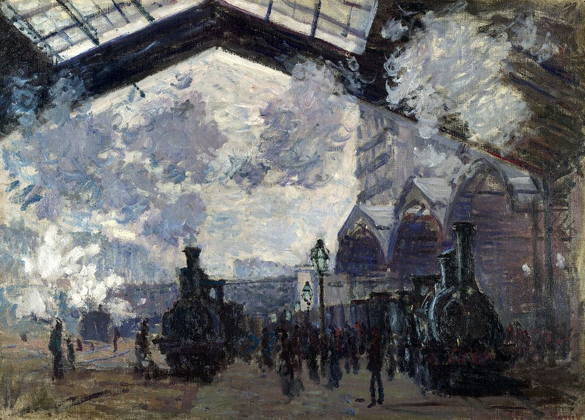

<head>
<meta charset="UTF-8" />
<meta name="keywords" content="drawing, painting" />
<meta name="description" content="drawings by Sunjy" />
<title>Sunjy</title>
<link rel="shortcut icon" type="image/x-icon" href="../../mImages/mCommon/favicon.ico" media="screen" />
<link rel="stylesheet" type="text/css" href="../../mCsses/mCommon/mCssA.css" />
<link rel="stylesheet" type="text/css" href="../../mCsses/mCommon/mCssB.css" />
<link rel="stylesheet" type="text/css" href="../../mCsses/mCommon/mCssC.css" />
<link rel="stylesheet" type="text/css" href="../../mCsses/mCommon/mCssD.css" />
<link rel="stylesheet" type="text/css" href="../../mCsses/mContent/mCssA.css" />
<link rel="stylesheet" type="text/css" href="../../mCsses/mContent/mCssB.css" />
<link rel="stylesheet" type="text/css" href="../../mCsses/mContent/mCssC.css" />
<link rel="stylesheet" type="text/css" href="../../mCsses/mContent/mCssD.css" />
</head>
<script type="text/javascript" src="../../mScripts/mContent/mContentAA.js" /></script>
<script type="text/javascript" src="../../mScripts/mContent/mContentAB.js" /></script>
<script type="text/javascript" src="../../mScripts/mContent/mContentAC.js" /></script>
<script type="text/javascript" src="../../mScripts/mContent/mContentAD.js" /></script>
<script type="text/javascript"></script> 
<script type="text/javascript">
document.write('<div class="mImgAbsolute"></div>');
/*
document.write('<p class="mFontSizeBColor" />From a white paper...</p>');
document.write('<table class="center"><tr><td>');
document.write('');
document.write('</td></tr></table>');
*/
</script>


<script type="text/javascript">
document.write('<p class="mFontSizeBColor" />The Gare St-Lazare</p>');
document.write('<p class="mFontSizeSColor" />“The Gare St-Lazare” by Claude Monet shows how he used swift brushstrokes to create the gleaming engines to the right and the passengers as if dark shadows on the platform.<br><br>Monet had rented a small flat and a studio near the Gare St-Lazare, in 1877 where he created a series of paintings at St-Lazare Train Station.<br><br>He explored smoke and steam and the way that they affected color and visibility. Monet investigated the effects of smoke and steam that were sometimes opaque and sometimes translucent in a modern urban Parisian milieu.<br><br>Monet created the habit of repeatedly painted the same subject in different lighting conditions, at different times in the day, and through the various changes of weather and season. Monet began this process in the 1880s and continued until the end of his life in 1926.<br></p>');
document.write('<table class="center" /><tr><td>');
document.write('<br>Monet had rented a small flat and a studio near the Gare St-Lazare, in 1877 where he created a series of paintings at St-Lazare Train Station.<br><br>He explored smoke and steam and the way that they affected color and visibility. Monet investigated the effects of smoke and steam that were sometimes opaque and sometimes translucent in a modern urban Parisian milieu.<br><br>Monet created the habit of repeatedly painted the same subject in different lighting conditions, at different times in the day, and through the various changes of weather and season. Monet began this process in the 1880s and continued until the end of his life in 1926.<br>" />');
document.write('</td></tr></table>');
</script>


